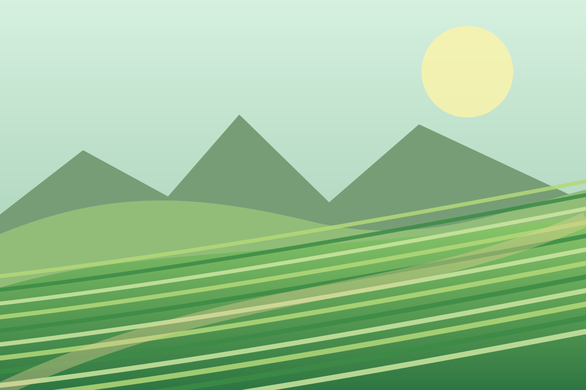

Join the community
Create an account and choose whether you're a farmer sharing harvests or a buyer seeking quality produce.
The marketplace that brings farmers and buyers together — directly. Farmers set their price. Buyers find fresh produce. Everyone wins.
Get started as

A better way to connect over fresh produce.
Create an account and choose whether you're a farmer sharing harvests or a buyer seeking quality produce.
Farmers publish produce offers. Buyers browse available harvests and find the right quantity and price.
Send an inquiry, agree on the details, and arrange your trade directly with the farmer.
Discover what's ready to harvest and available near you.

We believe the people who grow our food should have a better way to reach the people who need it. FarmLink makes that connection easier, clearer and fairer for everyone.
Join the community and turn good harvests into great connections.